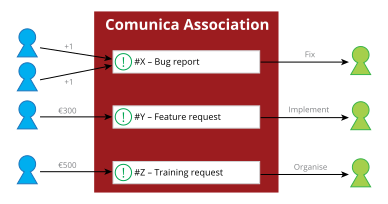

Knowledge Graphs on the Web
are a multifaceted story
- Publication APIs
- Querying algorithms
- Query languages
- ...
Difficulties for app developers
-
Distinguishing APIs
What kind of API is this?
-
Interacting with APIs
How to efficiently get data from this API?
-
Combining APIs
How to combine data across different APIs?
Queries as abstraction layer
SPARQL, GraphQL, ...
-
Say what needs to happen, not how
Declarative queries hide complexities of data retrieval
-
Queries are reusable
Queries are not API-specific
-
Execution via a generic, reusable query engine
Abstracts away complexities for executing queries
New optimisations can be used by merely updating query engine
Heterogeneity and Federation
-
Understanding any source
Give it any URL, and Comunica will aim to query it as efficient as possible
Linked Data documents, Triple Pattern Fragments, SPARQL endpoints, ...
-
Combining multiple sources
Data can be spread over multiple sources
-
Future: source discovery
All relevant sources may not always be known beforehand
For fully decentralised data (Solid)
Flexible and Modular Meta-Query Engine
-
Collection of building blocks
Independent modules implement specific functionality
-
Combining building blocks
Building custom query engines with specific functionality and settings
Using a flexible configuration system
-
Presets
Pre-compiled configurations for common combinations of functionality
Comunica SPARQL, Comunica Solid, ...
-
Members and sponsors
Financing core maintenance to advance the roadmap
Members collectively determine roadmap
-
Bounties
Organisations can place bounties on specific issues
Developers can get paid for resolving issues

→ We are looking for new sponsors and developers
Learn more: https://comunica.dev/association/
💻 Usage on the command-line
-
Installing Comunica SPARQL globally
$ npm install -g @comunica/query-sparql
-
Running a SELECT query
$ comunica-sparql https://fragments.dbpedia.org/2016-04/en \
"SELECT * WHERE { ?s ?p ?o } LIMIT 100"
-
Running a CONSTRUCT query
$ comunica-sparql https://fragments.dbpedia.org/2016-04/en \
"CONSTRUCT WHERE { ?s ?p ?o } LIMIT 100"
Learn more: https://comunica.dev/docs/query/getting_started/query_cli/
Advanced topics
-
Architecture
Actors, mediators, buses
-
Query plan
Inspecting the query execution flow
-
Alternative configurations
Different ways of executing queries
Modularity using the actor model
Logic is separated into different actors
Each actor independently performs a specific task.
- JSON-LD parsing actor
- Turtle parsing actor
- SPARQL union actor A
- SPARQL union actor B
Modules are wired together through semantic configuration files
Components.js: a semantic dependency injection framework.
Configuration files declare and parameterize actors, mediators and buses.
Links all the building blocks together, without having to do this in the code!
Query plan
Blueprint of how the engine executes a query
-
Based on SPARQL Algebra
Algebraic representation of SPARQL queries
Easier to work with for query engines than strings
-
Has a big impact on query performance
The difference between query execution in 1 ms vs 1 hour
-
Query planning
The act of optimising a query's algebra
Adaptive query planning: optimising at runtime
Learn more: https://comunica.dev/docs/query/getting_started/query_cli/
💻 Explaining query plans
-
How is a query being parsed to algebra
$ comunica-sparql https://fragments.dbpedia.org/2016-04/en \
-q 'SELECT * { ?s ?p ?o } LIMIT 100' --explain parsed
-
Inspecting the logical plan
$ comunica-sparql https://fragments.dbpedia.org/2016-04/en \
-q 'SELECT * { ?s ?p ?o } LIMIT 100' --explain logical
-
Inspecting the physical plan
$ comunica-sparql https://fragments.dbpedia.org/2016-04/en \
-q 'SELECT * { ?s ?p ?o. } LIMIT 100' --explain physical
Learn more: https://comunica.dev/docs/query/advanced/explain/
Alternative configurations
Different engines can be built by plugging in other components
-
Querying over Solid pods via authenticated requests
-
Following links between documents
-
Querying over implicit information via inference
Or create your own engine: https://comunica.dev/docs/modify/
Comunica abstracts access
to Knowledge Graphs
-
Via declarative queries
SPARQL, GraphQL, ...
-
Runs anywhere
CLI, client-side (browsers), server-side (Node.js), ...
-
Open
Anyone can use it and contribute
 ↔
↔
 ↔
↔